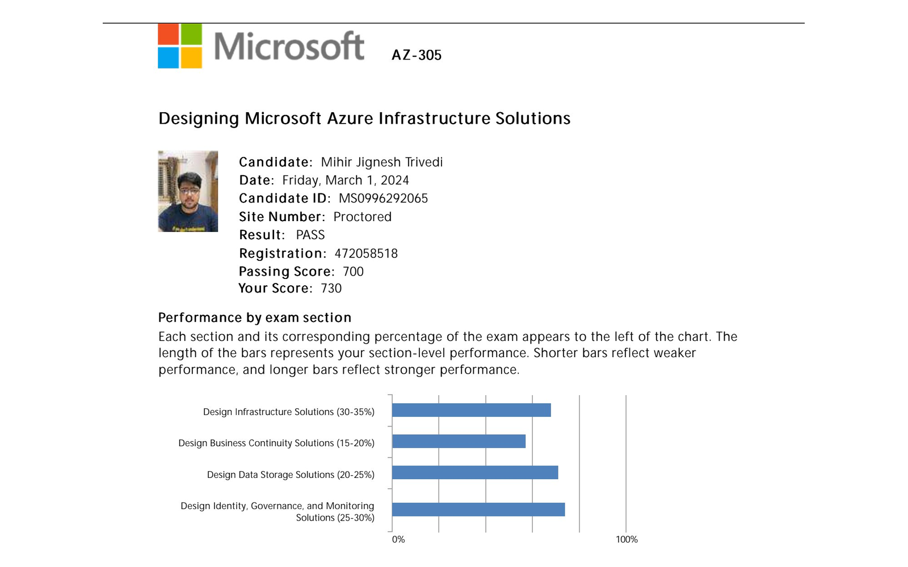
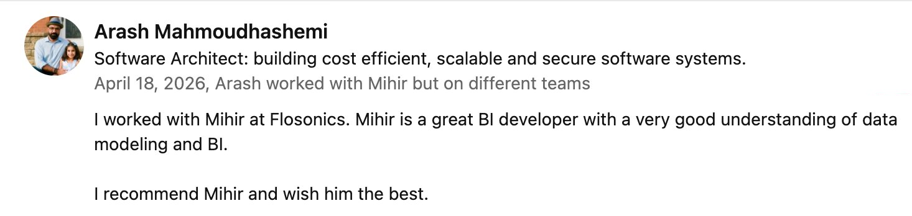
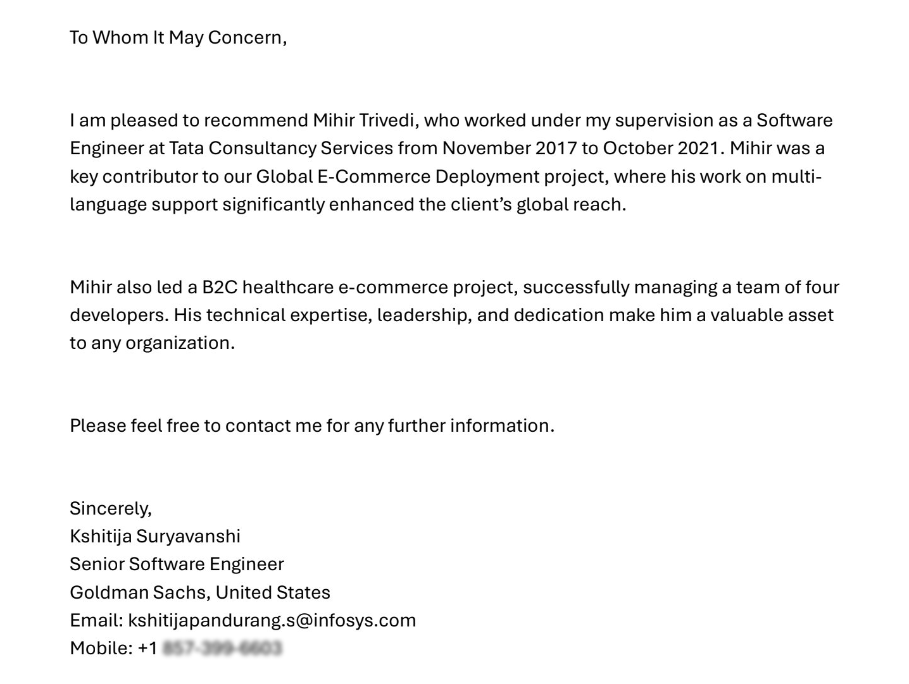

Independent interview POC • Fictional company • Synthetic data
Equipment Rental Power BI Proof of Concept
An independently prepared Power BI demonstration for discussion with Fadi Mesiha from CGI and David Nghiem from CIBC for a Senior Power BI Developer opportunity supporting CIBC Capital Markets. It demonstrates practical Power BI engineering, semantic modeling, DAX, dynamic RLS, data accuracy, governance, secure embedding concepts, and production architecture thinking relevant to financial services.
Power BI
Semantic Model
Star Schema
DAX
Dynamic RLS
Performance Analyzer
AI Readiness
Power BI Service
Production Architecture
Executive Summary
Beyond the Dashboard
This independently prepared interview POC is designed to show the difference between building a dashboard and engineering a trusted BI product.
The visible Power BI report is only one layer. Behind it are modeling decisions, reusable KPI definitions, role based security logic, data accuracy checks, performance validation, and AI ready semantic metadata. The POC demonstrates BI engineering thinking across semantic modeling, DAX engineering, dynamic RLS, governance, performance analysis, and production architecture considerations relevant to Capital Markets.
Live Report and Data Source
Live Report and Data Source
Explore the demonstration report and the synthetic source data used to build the semantic model.
Executive dashboard embedded from Power BI Service.
The live report currently uses public Publish to Web for demonstration, so it is anonymous and user-specific RLS is not enforced. A production banking implementation would use authenticated secure embedding, Entra ID, RLS, service principals, Power BI REST APIs, and controlled capacity.
Report Visuals
Equipment Category Performance matrix, Revenue Trend by Month line chart, Revenue by Branch bar chart, KPI cards, and business slicers.
Interactive Filters
Slicers for YearMonth, Region, Category, and Segment support executive exploration without exposing technical model fields.
Synthetic Excel based source data hosted in Google Sheets.
The dataset represents branch based equipment rental transactions, customers, fleet categories, sales representatives, regions, and security mappings for a fictional demo company.
FactRentalsTable
DimDateTable
DimCustomerTable
DimBranchTable
DimEquipmentTable
DimSalesRepTable
SecurityUsersTable
Technical Architecture
Semantic Model Architecture
A clean star schema keeps business slicing predictable while centralizing calculations through a governed measures layer.
DimDateTable
DimCustomerTable
DimBranchTable
DimEquipmentTable
DimSalesRepTable
SecurityUsersTable
Central Fact
FactRentalsTable
- FactRentalsTable is the transaction grain.
- Dimensions support business slicing by date, customer, branch, equipment, and sales rep.
- Relationships are one to many from dimensions into the fact table.
- Single direction filtering keeps behavior predictable.
- SecurityUsersTable supports dynamic RLS.
- Technical fields are hidden from report users.
- Certified measures are exposed through _Measures.
Implemented Scope
Implemented in This Demo
These are the Power BI implementation items completed for this independently prepared interview POC.
DAX and KPI Engineering
DAX and KPI Engineering
The measures were centralized in a dedicated _Measures table to support consistency, governance, and reuse across visuals.
Financial KPIs
Total Revenue, Gross Margin, Gross Margin %, and revenue trend measures are defined once and reused throughout the report.
Operational KPIs
Rental Count and Utilization % translate transaction and availability data into decision ready metrics.
Time Intelligence
Month over month logic is anchored on DimDateTable so trend calculations remain consistent with slicers and reporting periods.
Total Revenue
Total Revenue =
CALCULATE(
SUM(FactRentalsTable[TotalRevenue]),
FactRentalsTable[IsCancelled] = FALSE()
)Gross Margin %
Gross Margin % =
DIVIDE(
[Gross Margin],
[Total Revenue]
)Utilization %
Utilization % =
DIVIDE(
[Total Utilization Hours],
[Total Available Hours]
)Revenue MoM %
Revenue MoM % =
DIVIDE(
[Revenue MoM Change],
[Previous Month Revenue]
)Dynamic Row Level Security
Dynamic Region Based RLS
Security is modeled as a data driven access pattern instead of hardcoded filters per user.
User opens report
USERPRINCIPALNAME captures email
SecurityUsersTable maps email to region
DimBranchTable filters allowed branches
FactRentalsTable returns permitted rental transactions
RLS DAX
VAR CurrentUser =
USERPRINCIPALNAME()
VAR AllowedRegion =
LOOKUPVALUE(
SecurityUsersTable[Region],
SecurityUsersTable[Email], CurrentUser
)
RETURN
AllowedRegion = "All"
|| DimBranchTable[Region] = AllowedRegionSees all regions and full demo revenue.
Sees Central region only.
Sees West region only.
For this demonstration embed, RLS is not enforced because Publish to Web is anonymous. A production banking implementation would use authenticated secure embedding with Entra ID, RLS, service principals, Power BI REST APIs, and controlled capacity.
Performance Review
Performance Analyzer Review
Performance work starts with evidence: visual timing, query behavior, and model design signals.
No major DAX bottleneck found.
Query execution was lightweight for the current demo size and metric complexity.
Matrix visual was the heaviest.
Equipment Category Performance had the largest visual cost, so optimization would start with visual simplification.
KPI cards were acceptable.
KPI cards generate separate visual queries, which is acceptable for this demo and easy to revisit at scale.
Model cleanup supports performance.
Hidden technical fields, single direction filtering, and reusable measures reduce ambiguity and report sprawl.
Production tuning checklist
DAX Studio
VertiPaq Analyzer
Column cardinality review
Remove unused columns
Aggregations
Incremental refresh
Calculation groups
Field parameters
Report page optimization
Upstream SQL or dbt optimization
AI Readiness
AI Ready Semantic Model
AI readiness is not just about clicking Copilot. It starts with semantic model quality.
Model Preparation
- Hidden technical fields
- Certified measures
- Measure descriptions
- Synonyms for business language
- Clean star schema
- Explicit KPI definitions
- Natural language question patterns
- Preparedness for Copilot, Q&A, and Fabric data agents
Semantic metadata examples
Natural language questions the model is prepared to answer
What is total revenue by branch?
Show gross margin percent by equipment category.
Show utilization by equipment category.
Show rental count by month.
Show revenue by region.
Production Architecture
Production Extensions and Architecture Possibilities
The current demo intentionally focuses on the Power BI semantic and reporting layer. In a real enterprise implementation, the same model could be extended with a scalable cloud data platform, curated gold layer, deployment pipelines, monitoring, and AI enabled analytics.
This demonstration does not implement Direct Lake, but the semantic model design is compatible with a Fabric gold layer feeding a Direct Lake model. The live report uses public Publish to Web only for demonstration; a production banking implementation would use authenticated secure embedding, Entra ID, RLS, service principals, Power BI REST APIs, and controlled capacity.
Source Ingestion
In a production version, this could be extended by landing operational rental, branch, customer, fleet, and finance data into Fabric Data Factory, Dataflows Gen2, Azure Data Factory, SSIS, dbt, or Spark notebooks depending on platform strategy.
Bronze Layer
For enterprise scale, raw ingested data could land in a Microsoft Fabric lakehouse as the bronze layer, with OneLake acting as the unified storage layer for analytics data products.
Silver Standardization
Silver tables could standardize types, naming, conformed keys, deduplication rules, and data quality expectations before BI developers consume the data.
Gold Dimensional Model
The gold layer could expose curated dimensional tables and facts for Power BI semantic models. Data engineers and BI developers would collaborate on curated tables, SQL endpoints, data quality rules, and gold layer schemas.
Power BI Semantic Model
The same star schema, governed measures, business friendly fields, certified semantic models, descriptions, synonyms, and verified answers could become the governed reporting contract.
Direct Lake or Import Decision
Direct Lake could be considered when the model sits on Fabric lakehouse or warehouse data and the goal is high performance without traditional import refresh. Import, Direct Lake, or Composite model decisions should be based on data size, latency needs, licensing, security, and performance.
Governed Reports and Apps
Production sharing would use authenticated Power BI Apps, secure embedding, deployment pipelines, dev/test/prod workspaces, RLS through Entra ID or Microsoft 365 security groups, and OLS where sensitive columns or tables need to be hidden.
Monitoring and Adoption
Monitoring Hub, refresh history, usage metrics, capacity metrics, service diagnostics, and Power BI REST API automation could support health checks, deployment validation, metadata extraction, refresh automation, and governance reporting.
AI Ready Experience
Copilot and Fabric data agents could answer from governed definitions when the semantic model includes descriptions, synonyms, certified measures, verified answers, and AI instructions.
Platform Patterns
Microsoft Fabric lakehouse, Fabric Warehouse, OneLake, SQL endpoint, medallion architecture, and a curated gold layer could be implemented as production extensions.
Cloud Data Warehousing
A similar semantic model could be built on top of curated analytical data from Redshift, Snowflake, BigQuery, Databricks, Azure Synapse, PostgreSQL, SQL Server, or Fabric Warehouse.
Transformation Governance
For production, dbt could define tested, documented, version controlled transformation models feeding a gold layer. Spark notebooks, Fabric Data Factory, Dataflows Gen2, ADF, or SSIS could also support scalable ELT or ETL pipelines.
Semantic Model Standards
Incremental refresh could reduce refresh time for large rental history. Aggregation tables could speed executive visuals. Calculation groups could centralize YTD, MTD, YoY, and MoM logic. Field parameters could let users switch metrics or dimensions.
Lifecycle Discipline
Tabular Editor could help manage calculation groups, display folders, measure formatting, descriptions, and advanced semantic model standards. TMDL and Git integration could support source control, code review, and deployment discipline.
Enterprise Security
For enterprise scale, I would consider Entra ID group based RLS assignment, OLS for sensitive data, workspace discipline, certified semantic models, deployment pipelines, and operational support standards.
Roadmap
What I Bring to the Team
A practical 90 day roadmap for turning reports into a trusted, governed, AI ready analytics platform.
This roadmap shows how I would approach a senior Power BI role in a branch based, fleet driven equipment rental business. The focus is not just on creating reports, but on building the semantic layer, governance standards, Power BI Service discipline, and AI ready foundation that make reporting trustworthy at scale.
Semantic Modeling
DAX Governance
Fabric Readiness
AI Ready Analytics
Power BI Service Governance
Why This Matters
From Dashboards to Decision Infrastructure
Most organizations already have reports. The real challenge is whether leaders trust the numbers, whether branches use the same KPI definitions, whether security is consistent, whether refresh failures are visible, and whether future AI assistants can answer questions from governed data instead of raw tables.
30 / 60 / 90 Day Roadmap
Practical steps from discovery to trusted delivery.
30 Days, Discover and Diagnose
Goal: Understand the current BI landscape before changing anything.
Activities
- Audit reports, workspaces, semantic models, refresh schedules, data sources, and ownership.
- Meet with users across leadership, finance, operations, sales, branch teams, and fleet teams.
- Document trusted reports, broken reports, duplicate logic, manual Excel workarounds, and KPI confusion.
- Review security model and RLS patterns.
Deliverables
Impact: Start from facts, avoid rework, and quickly identify the highest value fixes.
60 Days, Standardize and Stabilize
Goal: Create one trusted foundation for high value reporting.
Activities
- Refactor the core rental or fleet model into a clean star schema.
- Create reusable DAX patterns and calculation groups.
- Document measures with business definitions.
- Apply dynamic RLS aligned to branch or region hierarchy.
- Set up deployment discipline from development to production.
Deliverables
Impact: Reports become more consistent, faster, easier to support, and easier for business users to trust.
90 Days, Deliver and Future Proof
Goal: Ship visible business value and prepare the model for AI enabled analytics.
Activities
- Deliver executive dashboard improvements.
- Configure model metadata, synonyms, measure descriptions, and verified Q&A examples.
- Create a Power BI monitoring dashboard for refresh health, usage, and report adoption.
- Build a practical Copilot or data agent style proof of concept using the certified model.
- Deliver self service reporting guidance for business users.
Deliverables
Impact: Leadership gets trusted answers faster, the BI team becomes proactive, and the analytics platform becomes ready for AI assisted reporting.
Semantic Model Maturity
From raw reports to governed self service.
Raw Reports
Reports connect directly to source tables. KPI logic is repeated across files.
Risk: High inconsistency.Shared Dataset
A common dataset exists, but measures and definitions may not be fully documented.
Risk: Medium inconsistency.Certified Semantic Model
Star schema, documented measures, tested relationships, dynamic RLS, certified ownership, and clear promotion rules.
Risk: Low.AI Ready Semantic Model
Business friendly names, measure descriptions, synonyms, verified Q&A examples, AI instructions, and governance rules.
Risk: Controlled.Governed Self Service Platform
Multiple certified domains, sandbox and production separation, monitoring dashboard, usage tracking, and clear ownership.
Risk: Managed at scale.Governed AI
Practical AI Integration Opportunities
AI should act as a governed assistant on top of trusted data. It should help people ask better questions, spot exceptions faster, and explain performance patterns using certified definitions.
Leadership
Executive KPI assistant, weekly performance summary, branch and region variance explanation, risk and exception summary.
- Business problem
- Leaders need fast, consistent explanations of performance movement.
- Data needed
- Revenue, margin, utilization, branch, region, customer, and period data.
- Power BI or Fabric connection
- Certified model, executive dashboard, Copilot style Q&A.
- Governance requirement
- Certified KPIs, RLS, verified prompts, and approved metric definitions.
- Expected impact
- Faster decision cycles and fewer conflicting performance narratives.
Sales
Customer account research assistant, quote to rental conversion insights, cross sell and upsell opportunity signals, customer segment analysis.
- Business problem
- Sales teams need account context without stitching together multiple reports.
- Data needed
- Customers, rentals, quotes, segments, branch coverage, equipment categories.
- Power BI or Fabric connection
- Sales semantic model, account level report pages, curated data products.
- Governance requirement
- Customer access rules, approved definitions, and documented lineage.
- Expected impact
- Better account planning and more relevant customer conversations.
Branch Operations
Branch KPI assistant, equipment availability assistant, utilization exception alerts, demand forecasting support.
- Business problem
- Branches need operational signals before issues become month end surprises.
- Data needed
- Inventory, availability, utilization, open rentals, returns, demand patterns.
- Power BI or Fabric connection
- Operational scorecards, alerts, Fabric data agent style assistant.
- Governance requirement
- Branch hierarchy security, refresh monitoring, and consistent availability logic.
- Expected impact
- Earlier exceptions, better fleet positioning, and stronger branch accountability.
Fleet and Maintenance
Fleet utilization analysis, downtime pattern detection, repair cost trend analysis, asset lifecycle decision support.
- Business problem
- Asset decisions require a joined view of revenue, usage, downtime, and cost.
- Data needed
- Fleet master, rental history, maintenance events, repair cost, age, category.
- Power BI or Fabric connection
- Fleet gold tables, certified utilization measures, lifecycle dashboards.
- Governance requirement
- Validated asset grain, data quality checks, and documented calculation rules.
- Expected impact
- Sharper buy, hold, transfer, repair, and retire decisions.
Finance
Revenue and margin analysis, AR aging assistant, budget versus actual reporting, month end reporting support.
- Business problem
- Finance needs reconciled numbers and explainable variance analysis.
- Data needed
- Revenue, cost, margin, AR aging, budget, forecast, period close data.
- Power BI or Fabric connection
- Finance semantic model, paginated summaries, governed financial KPIs.
- Governance requirement
- Access control, audit trail, certified measures, and close period discipline.
- Expected impact
- Less manual reconciliation and faster month end insight.
Data and Analytics Team
Semantic model documentation assistant, DAX measure explainer, refresh failure diagnosis, report inventory assistant, data quality rule assistant.
- Business problem
- BI teams need to reduce support load while improving standards.
- Data needed
- Metadata, lineage, refresh history, usage metrics, measure definitions.
- Power BI or Fabric connection
- Monitoring Hub, REST API metadata, model descriptions, Git artifacts.
- Governance requirement
- Workspace standards, source control, deployment checks, and ownership rules.
- Expected impact
- More proactive support and clearer BI engineering standards.
AI Ready Semantic Layer
How I Would Make the Analytics Layer AI Ready
AI is only as reliable as the semantic layer it reads from. My focus would be to make the model understandable to humans first, then structured enough for AI assistants to answer business questions safely.
Business friendly table and column names
Explicit DAX measures instead of implicit measures
Measure descriptions with business definitions
Synonyms for business terms
Certified semantic models
Verified Q&A examples
Dynamic RLS and OLS where needed
Clear workspace governance
Lineage documentation
Deployment pipeline
Monitoring Hub and refresh health reporting
Copilot or data agent readiness testing
Platform Architecture
A practical architecture for trusted analytics.
Source Systems
Rental transactions, fleet data, maintenance data, finance data, sales data, safety and training data
Curated Data Layer
Lakehouse or warehouse tables, validated business grain, clean dimensions and facts
Semantic Layer
Certified Power BI model, star schema, reusable DAX, calculation groups, RLS and OLS
Consumption Layer
Executive dashboards, branch reports, finance reports, operational scorecards, self service analytics
AI Layer
Copilot style Q&A, data agent style assistant, verified answers, governed natural language insights
Governance Layer
Git, deployment pipeline, monitoring, data quality checks, documentation, access control
Success Metrics
Measured by trust, speed, and adoption.
Success is not measured by the number of reports created. Success is measured by whether the business can make decisions faster with numbers they trust.
The Value I Bring
I bring the mindset of a Senior Power BI Developer who thinks like a semantic model architect, platform owner, and business partner. I can help turn scattered reporting into a governed analytics foundation that supports executive reporting, branch operations, finance, fleet decisions, and future AI assisted analytics.
What This POC Demonstrates
What This POC Demonstrates
Practical BI capability across the model, report, service, governance, and delivery conversation.
Semantic Model Engineering
Dimensional design, relationship cleanup, field hygiene, and model behavior that is predictable for users.
Governed KPI Design
Reusable DAX measures, explicit definitions, and metric logic that can be audited and trusted.
Secure Analytics
Dynamic RLS design and production awareness around authenticated sharing, group based access, and OLS.
Performance Awareness
Performance Analyzer review, visual level tuning priorities, and future scale patterns.
AI Ready Modeling
Semantic descriptions, synonyms, certified measures, and natural language readiness for Copilot and data agents.
Executive Storytelling
A focused executive view that links revenue, profitability, utilization, branch performance, and fleet category patterns.
Production Thinking
Honest extension path across Fabric, OneLake, medallion architecture, deployment pipelines, monitoring, and governance.
Stakeholder Communication
A portfolio case study that translates technical implementation into business value without burying the reader.
Professional Credentials
Microsoft Certifications
Microsoft-issued credential records presented as verifiable professional credentials supporting Azure, Power BI, and Power Platform capability. Personal credential identifiers and signatures are redacted for public display.




Professional Feedback
What Colleagues Say
Feedback from colleagues, supervisors, and professional references.



Professional References
Reference letters
Names and organizations are retained where visible; contact details are redacted.



Interview Context
Prepared by Mihir Trivedi
Mihir Trivedi is a BI Developer and Senior Power BI Developer candidate with experience across Power BI, SQL, semantic modeling, data warehousing, Tableau, PostgreSQL, Power Platform, stakeholder reporting, and executive analytics. This POC was independently prepared for interview discussion; it is not an official CGI or CIBC project and does not use confidential client data.
Current Opportunity
- July 9, 2026, 3:30–3:45 PM: Initial screening conversation with Veronika Kovbasiuk from CGI.
- July 13, 2026, 1:00–2:00 PM: Interview for the Power BI Developer position with Fadi Mesiha from CGI and David Nghiem from CIBC.
Mihir is a Canadian Permanent Resident, available to start immediately, and prepared to relocate to Toronto by the end of July 2026. He is fully available for the role’s hybrid schedule and client-facing responsibilities. This information is provided as professional interview context only and is not an endorsement by CGI or CIBC.